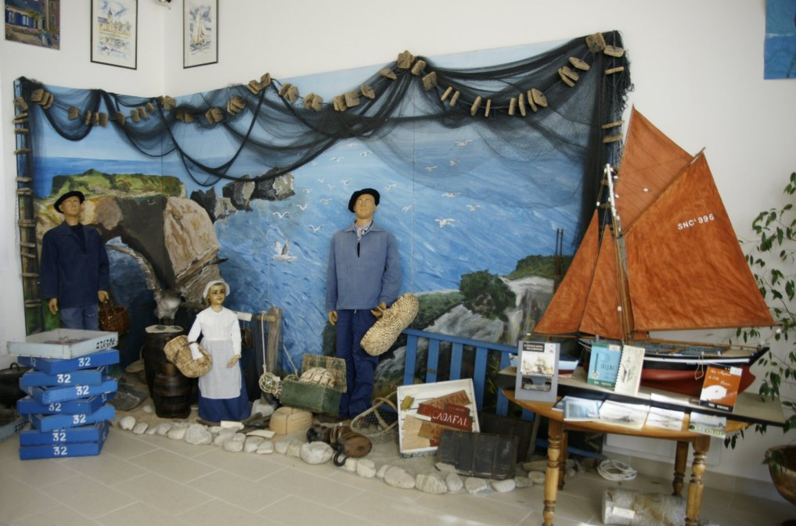

La saison 2013 est ouverte
La Maison du Patrimoine vous propose un retour dans le «Piriac dans les années 50».
Venez découvrir :
- Les grands changements urbanistiques de la commune
- Les modes de vie et ce qui faisait le quotidien de tout les jours
- L’’arrivée des Arts Ménagers
- Les loisirs et les associations de l’époque
- L’arrivée des touristes
- .....
Un grand bain au fond de ces années qui ne connaissaient pas les crises....
Nous vous attendons
Loading the player ...
Bienvenue sur le site de la Maison du Patrimoine de Piriac sur Mer

Habiter ou Visiter une petite cité de caractère comme Piriac sur Mer c’est bien, appréhender l’âme de ce village, connaître son Histoire, ses coutumes c’est mieux.
La Maison du Patrimoine de Piriac a pour ambition de conserver ce qui représente un intérêt historique ou ethnologique pour Piriac sur Mer.
Ce site nouvellement ouvert vous fournit toutes les informations afin que vous puissiez venir nous rejoindre et visiter les expositions qui ne peuvent être toutes présentées sur ces pages.
Il a également pour but de vous tenir informé sur les travaux et recherches en cours qui seront l’objet de nouvelles expositions dans les années à venir.
Comme vous le constaterez la Maison du Patrimoine est une association de bénévoles, tous ceux qui le souhaitent peuvent être membres de l’association et participer à tous les travaux et activités tout au long de l’année.
Nous recherchons plus particulièrement :
- des personnes pour assurer des permanences aux heures d’ouverture au public
-
des personnes pour effectuer des travaux de recherche et préparation de sujets d’exposition
-
des objets, informations, documents, photos présentant Piriac sous des angles non encore connus
-
des photos d’école pour compléter l’exposition « les petits écoliers piriacais » qui retrace la vie des écoles piriacaises depuis... 1915 !
Merci de votre visite sur notre site et à bientôt dans nos locaux
Le Président